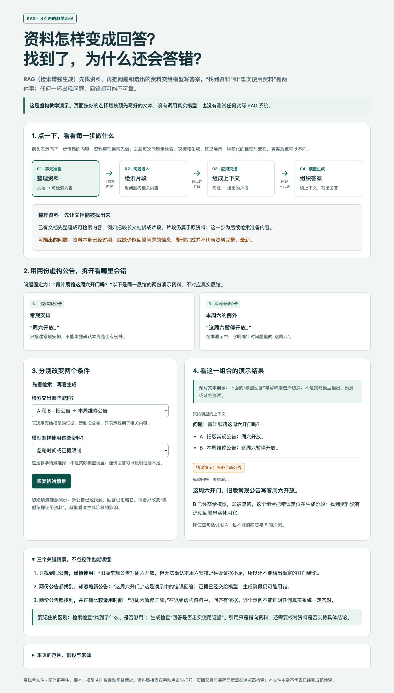
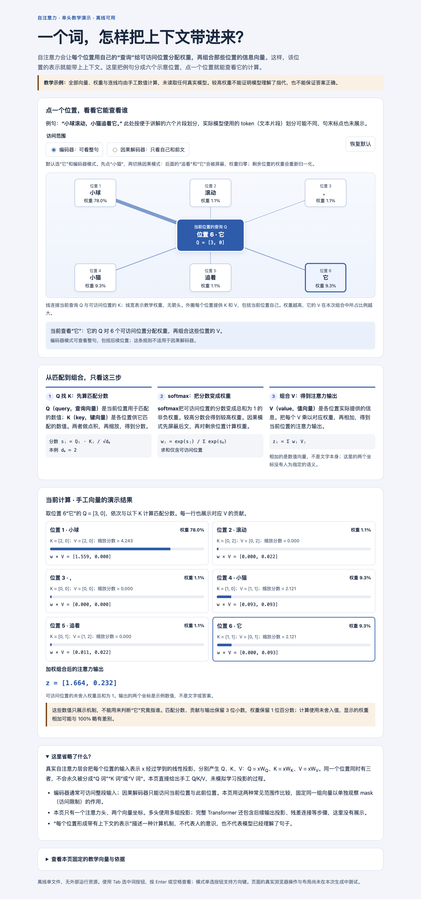

直接给易懂的首答
术语随文解释，用具体例子保留机制与条件，不要求你先写优化提示词。
先把核心意思、关键过程和条件讲清楚。需要看关系或变化时，再用图解或交互网页，让抽象内容具体起来。
术语随文解释，用具体例子保留机制与条件，不要求你先写优化提示词。
图或网页能解决具体理解障碍时，说明用途并征得对应同意。
同意后直接继续。页面围绕问题选择结构，不要求每个主题套同一模板。
你问：RAG 是什么？为什么找到资料以后还会答错？
先解释：RAG 就是先从资料库找相关内容，再把问题和选出的资料一起交给模型写答案。资料可能过时，也可能只有主题相关；模型还可能忽略或读错条件。所以找到资料不等于回答一定可靠。
有需要时再建议：一个能切换“找到了哪些资料、模型怎样使用资料”的网页，可以把两步分别可能出错的位置展示出来。你需要这个网页吗？
上面是人工编写的用法示例，展示文字到可视化的流程，不是原始测试对话。明确要求 HTML 时无需再次确认。
两页使用不同结构：一页看流程和情景，一页看节点关系与权重。它们是演示作品，不是 Skill 必须套用的模板。

用两份虚构公告，把“有没有找到正确资料”和“有没有正确使用资料”分开观察。

点一个位置，观察它怎样匹配其他位置、分配权重，再组合那些位置的信息。
点击缩略图或按钮，即可打开交互演示。
RAG 页面切换的是预写情景，自注意力页面计算的是手工教学向量。两者没有真实模型调用，不能用于判断某个实际系统的准确率、性能或内部推理原因。
原始两页在 Chromium 中共通过 87 条操作与计算断言，覆盖切换、状态同步、重置、键盘、窄屏、无脚本与断网内容操作。
本次导出只整理来源和验证说明，交互脚本、样式保持相同；导出后的页面与新总览页只做静态检查，未重新浏览器运行。
技术检查和模型评审不能代替真人理解体验，也没有证明 Agent 自动触发或所有后续生成物都正确。查看完整验证范围。